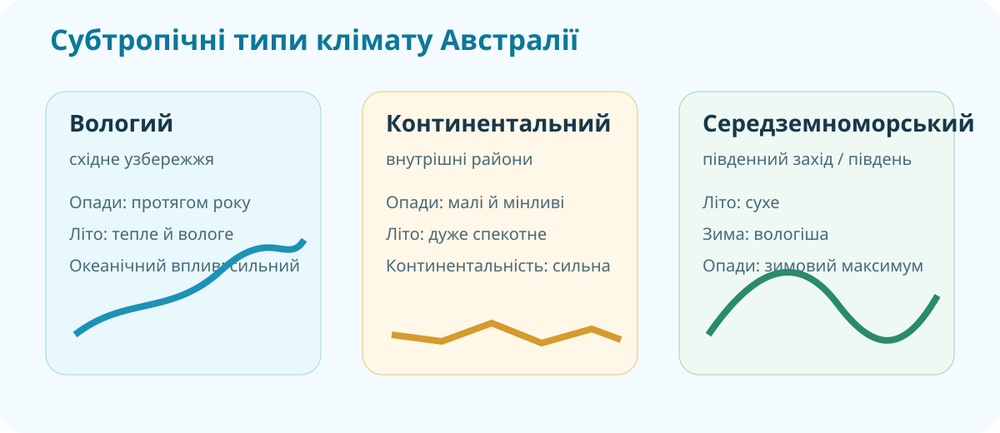
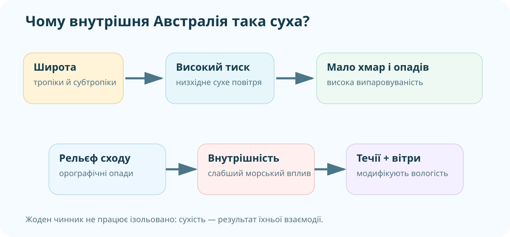

1. Побачте проблему на реальній карті
OpenStreetMap. Масштабуйте карту й звертайте увагу на гірський схід, внутрішні басейни та узбережжя.
Передбачте клімат
Австралію перетинає Південний тропік. Значна частина материка лежить у зоні субтропічного високого тиску.
2. Кліматичний детектив: три субтропічні типи
КТП вимагає порівняти вологий, континентальний і середземноморський типи субтропічного клімату. Спершу — дані, потім назва.
Літо тепле; опади впродовж року, максимум частіше в теплу половину; океанічне узбережжя.
Мала річна сума опадів; високі літні температури; велика континентальність; внутрішні райони.
Сухе літо, дощова прохолодніша зима; західне або південно-західне узбережжя.

3. Чому океан не «заливає» весь материк дощами?
Модель причин

Локальна навчальна схема: широта → тиск → вітри → течії/рельєф → просторовий розподіл опадів.
Перевіряємо механізм
4. Реальні дані: де дощ, а де дефіцит?
Bureau of Meteorology
Відкрийте карту середніх річних опадів і знайдіть контрасти: північне узбережжя, східні схили, внутрішня Австралія, південний захід.
Число саме по собі не є кліматом
У 2025 році середня по Австралії річна кількість опадів становила 502,2 мм — на 7,8% вище середнього 1961–1990. Але це один конкретний рік, не кліматична норма.
5. Поверхневі й підземні води: сухо ≠ без води
Великий Артезіанський басейн
Geoscience Australia називає його найзначнішою гідрогеологічною системою країни. Він займає понад 1,7 млн км² і лежить під частинами Квінсленду, Нового Південного Уельсу, Південної Австралії та Північної Території.
Geoscience Australia: Great Artesian Basin ↗
Річки внутрішнього стоку
У центрі материка багато тимчасових водотоків і безстічних басейнів. Озеро Ейр (Кеті-Танда) різко змінює площу залежно від рідкісних надходжень води.
6. Коротке відео: чому клімат різний?
Bureau of Meteorology. Під час перегляду зафіксуйте три фактори кліматичних відмінностей.
Протокол перегляду
7. Теорія — тільки після дослідження
Натисніть, коли вже виконали хоча б три попередні дослідницькі блоки.
Коротка система
1. Широта й циркуляція. Велика частина Австралії лежить у тропічних і субтропічних широтах, де часто панує низхідне сухе повітря субтропічних антициклонів.
2. Рельєф. Великий Вододільний хребет перехоплює частину вологи з Тихого океану: навітряні схили вологіші, внутрішні райони отримують менше опадів.
3. Континентальність. Великі внутрішні площі віддалені від головних джерел вологого морського повітря і мають сильніші температурні контрасти.
4. Пояси й типи клімату. Північ — переважно субекваторіальна/тропічна сезонно-волога; внутрішня частина — тропічна суха; східне узбережжя — вологіше; південний захід і частина півдня мають середземноморські риси.
5. Води. Поверхневий стік дуже нерівномірний. У посушливих районах особливо важливі підземні води, включно з Великим Артезіанським басейном.
8. CER: дайте доказову відповідь
C — Claim
Чому Австралія є найсухішим заселеним материком?
E — Evidence
Наведіть щонайменше 3 докази з карт/кліматограм/геоданих.
R — Reasoning
Поясніть механізм, який пов’язує докази з висновком.
9. Домашнє дослідження
§28. Порівняйте два пункти Австралії: один на східному узбережжі, другий у внутрішній частині. Для кожного знайдіть кліматичні дані та поясніть різницю опадів і температур через щонайменше 3 кліматотвірні чинники.
Електронний підручник: Гільберг, Довгань, Совенко — Географія, 7 клас ↗
10. Тест — 10 балів
Спочатку ідентифікація
Тест недоступний, доки не заповнені всі три поля.